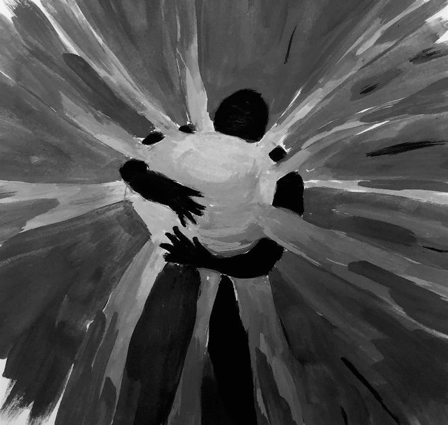
My Apology
Regret ~ Memory
BETWEEN THE LINES
POETRY EXHIBITION
A COLLECTION OF WORDS & FEELINGS
Some things are easier to write than to say.
Poems by Alvinn
Explore the collectionsSelect a Poem to begin reading.

Regret ~ Memory
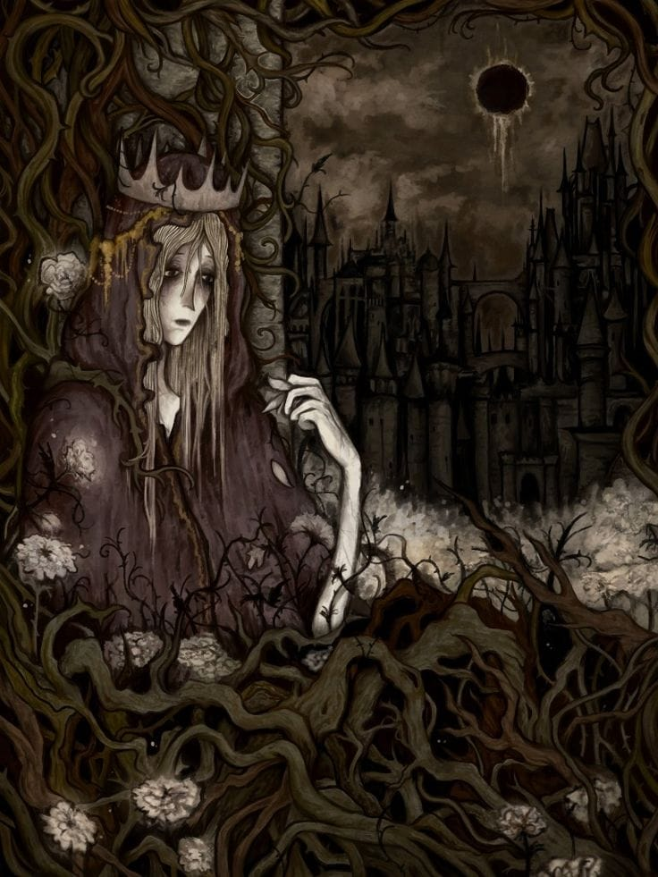
Apathy ~ Weariness
Grief ~ Adoration
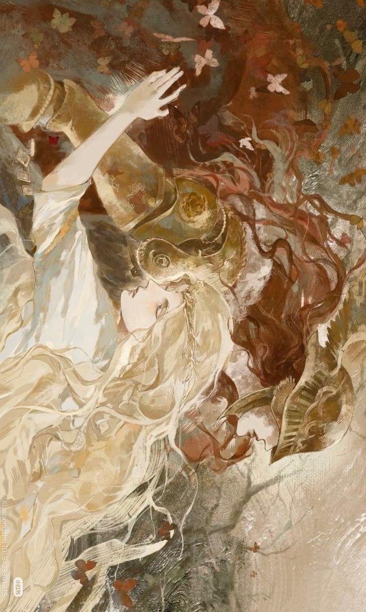
Acceptance ~ Farewell
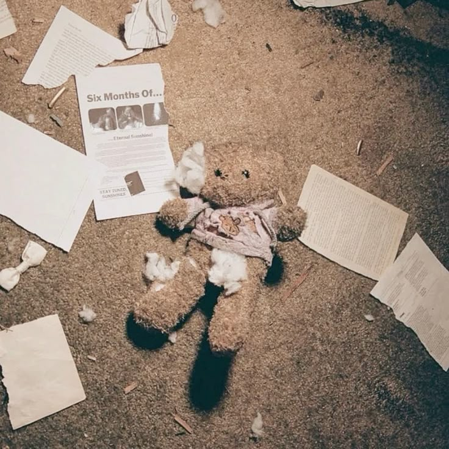
Sadness ~ Longing
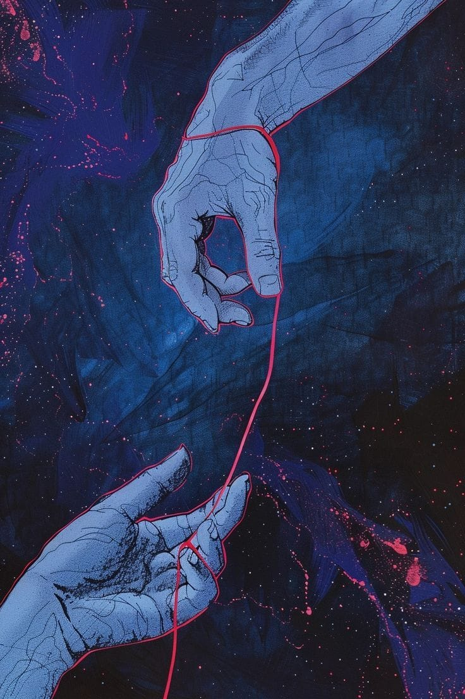
Soul ~ Wishes
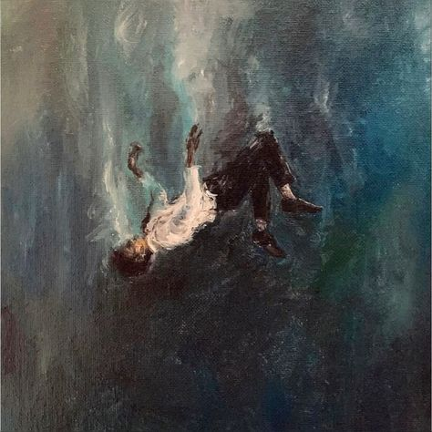
Despair ~ Regret
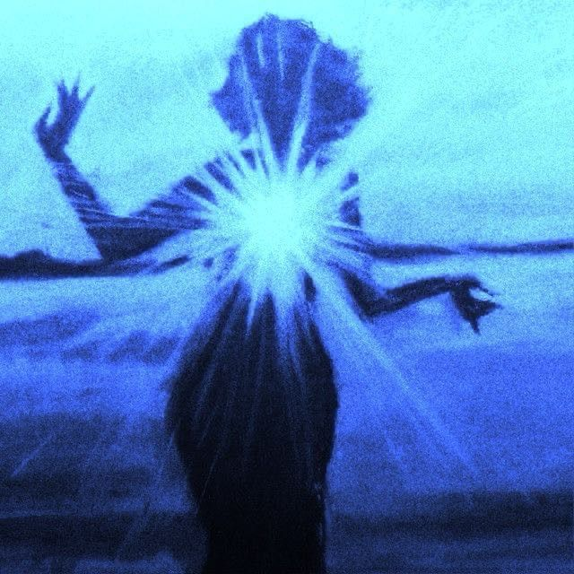
Love ~ Distraction
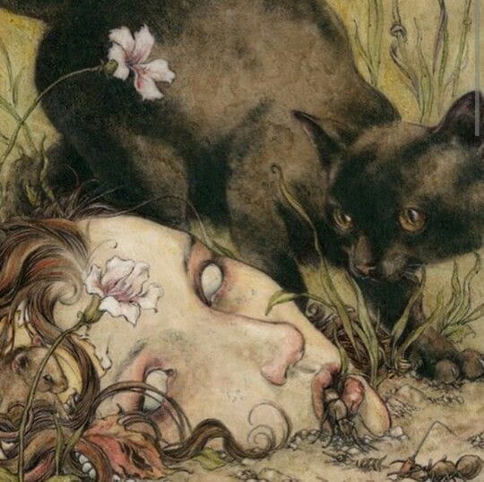
Embrace ~ Warmth
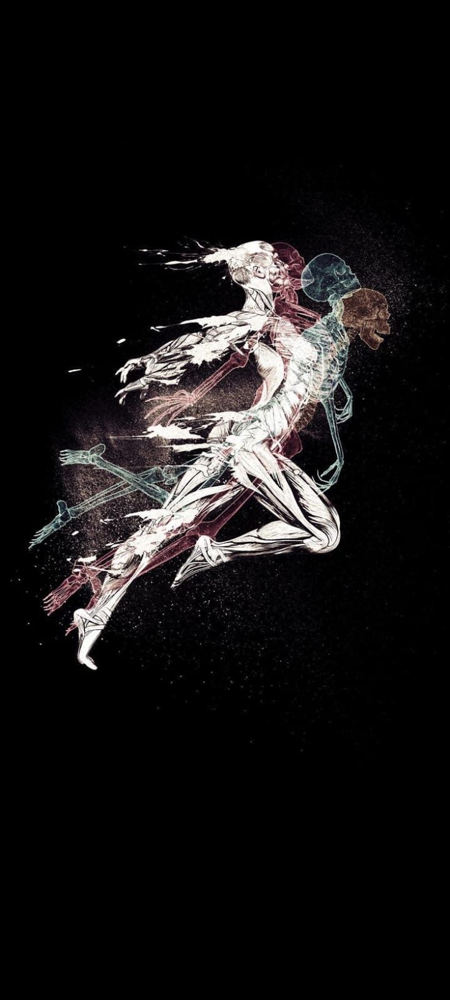
Inacceptance ~ Acceptance
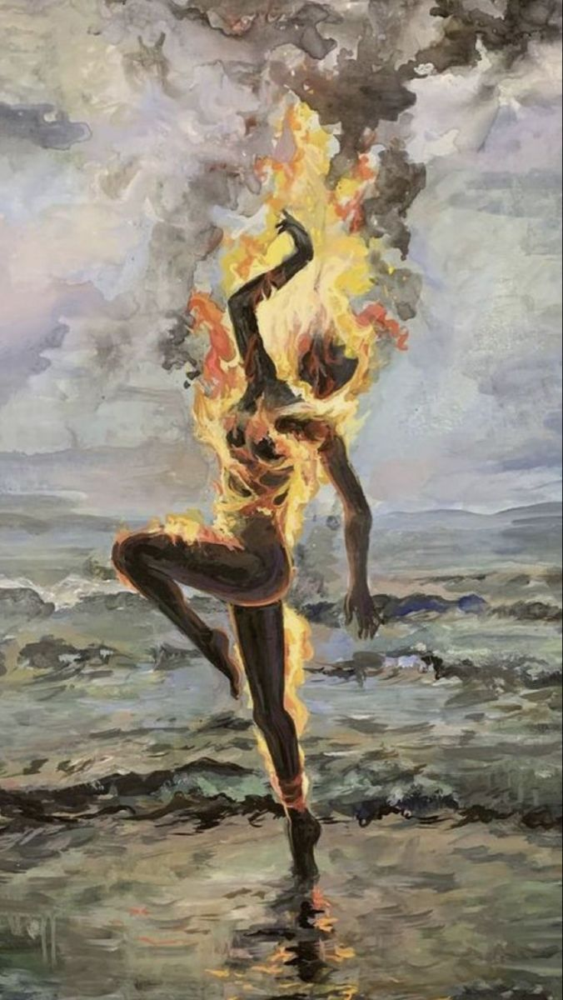
Weeping world
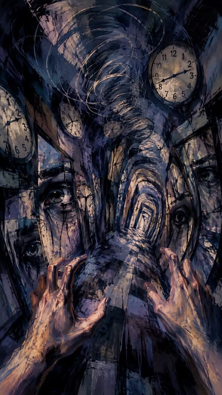
Doubt ~ Despair
Opinions ~ Avoidance
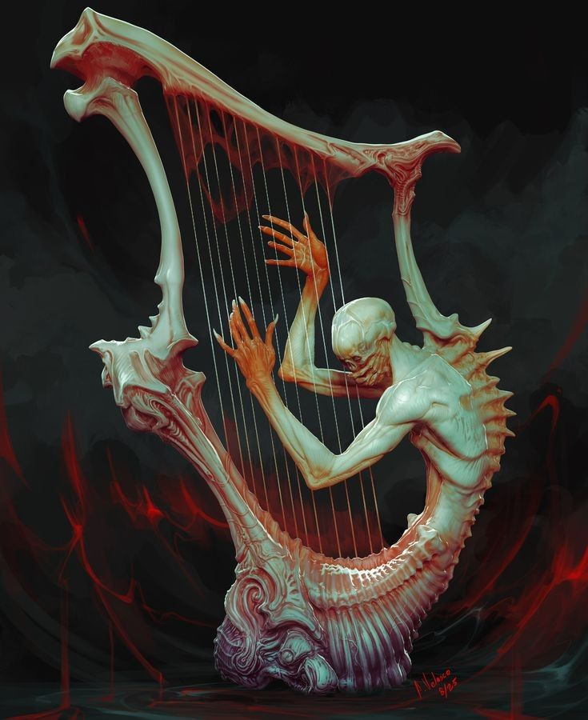
A song in our minds
It will show here
I write to give words to the feelings that are difficult to say out loud, or to pictures we can never describe.
Return to the Collection